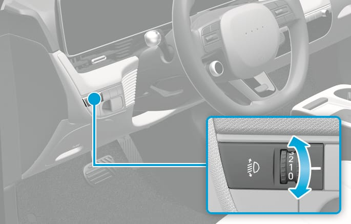

전조등 조사 각도 조절하기
탑승자나 적재물의 중량에 의해 차량의 기울기가 달라지는 경우, 전조등의 조사 각도를 조절해 시야를 확보하고 피로를 줄일 수 있습니다.

2C_HeadLampLevelingManual
스위치에 표기된 레벨이 높을수록 전조등 각도가 아래를 향합니다.
-
전조등 각도를 내리려면 조절 스위치를 위로 돌리십시오(레벨3 방향)
-
전조등 각도를 올리려면 조절 스위치를 아래로 돌리십시오(0레벨 방향).
적재 조건에 따른 전조등 조사각(레벨)
다음 표를 참고해 탑승 인원 및 적재물 중량에 따라 전조등 조사 각도를 적절히 조절한 후 안전하게 주행하십시오.
|
적재 조건(5인승 기준) |
조사각 레벨 |
|
운전자 1명 |
0 |
|
운전자 1명 + 동승자 1명 |
0 |
|
운전자 포함 5명 |
1 |
|
운전자 포함 5명 + 화물칸 적재 |
2 |
|
운전자 1명 + 화물칸 적재 |
3 |
-
적재 조건이 정확하게 일치하지 않는 경우 가장 근접한 조건에 맞춰 조사각을 조절하십시오.
-
전조등 빛이 반대편 차량의 운전을 방해하지 않도록 적절한 각도를 유지하십시오.